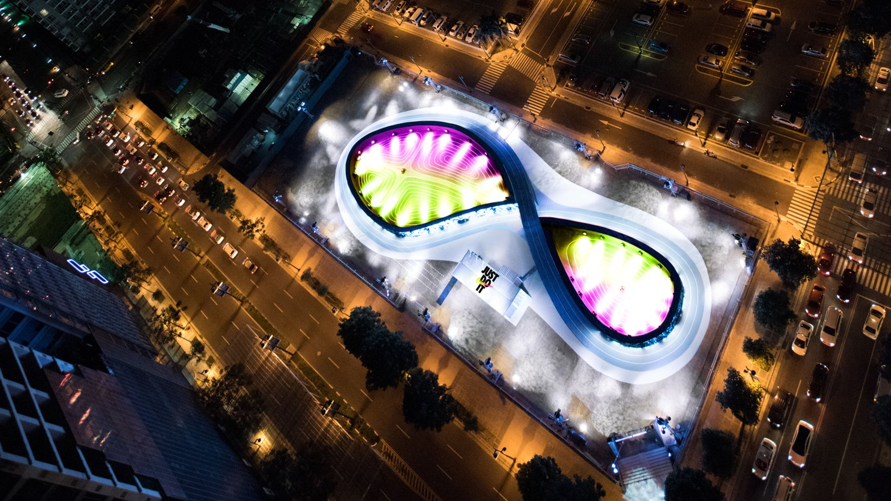
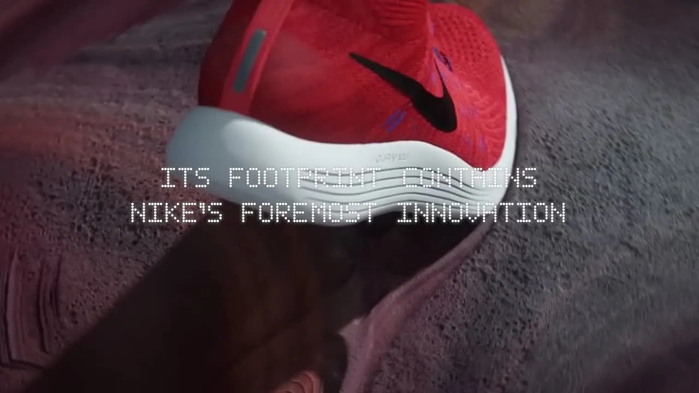
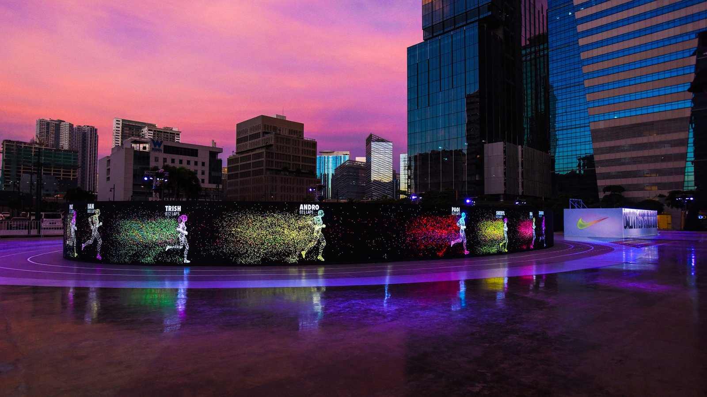

案例发生了什么
Nike 为 LunarEpic 跑鞋在马尼拉搭建了一条约 200 米的 8 字形 LED 跑道，整体轮廓取自鞋底足迹。跑者先完成一圈并被系统记录，随后轨道边缘的全长 LED 会生成一个与本人上一圈配速对应的光影化身；下一圈，跑者看到的不是抽象秒表，而是一个始终在前方移动的“另一个自己”。D&AD 与 One Club 档案均将其核心概括为：把“最大的对手是自己”变成可奔跑、可追逐的实体体验。
真实执行素材
以下图片来自权利方、球队、品牌、制作方或奖项原档；按执行链完整度灵活收录，不限制固定张数，逐图保留主源链接。




MARKETING KNOWLEDGE ROUTER · 营销知识路由器
营销启发卡
用同一套卡片把日常体育案例与世界杯案例、深度文章连起来。 卡片底部按主题连接全站相关案例、经典方法与深度文章。
核心动作
把产品的鞋底轮廓放大为场地本身，让空间设计先完成产品识别；以 RFID 与计时数据生成实时光影对手，把配速数字翻译成肉眼可见的位置差。
传播与商业机制
产品即场地：跑道轮廓直接来自 LunarEpic 足迹，功能卖点不再依赖展板解释；数据变对手：上一圈成绩被翻译成移动光影，个人数据成为新的参与刺激；可观看性：场外观众也能看懂“真人追光”，体验同时是一场视觉表演。
可复用的方法
当产品卖点过于抽象时，把它放大成能让用户进入、运动和被拍摄的空间；再用实时反馈制造第二次行动。
适用条件与风险
- 大体量 LED、计时系统和封闭路线对预算、场地审批、天气与安全运营要求高。
- 奖项页能确认体验结构，但没有统一披露到场人数、试跑完成率或销售增量。
资料与来源
官方资料与原始来源
D&AD2017 · Nike Unlimited Stadium打开原始来源 ↗
The One Club2017 · Nike Unlimited Stadium award archive打开原始来源 ↗
来源备注体验事实以 D&AD 与 One Club 奖项原档交叉确认；未使用第三方概念图。效果数字未见可独立核验口径。